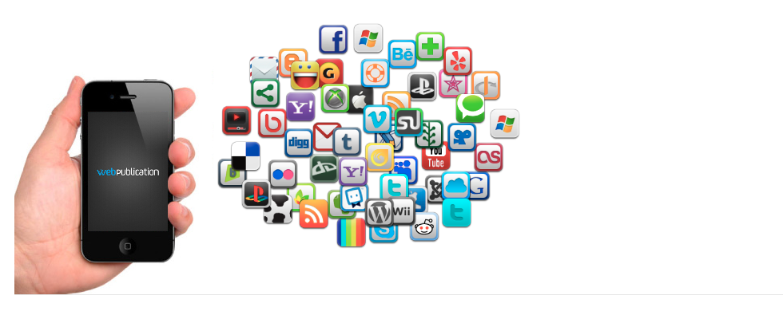

Application hybride, web ou native : comment choisir ?
Depuis le début de l’année, l’équipe a remarqué une hausse des demandes de renseignement concernant les différents types d’application mobile. On a donc décidé de revenir sur tout ça, pour y voir plus clair !
Dans un premier temps, nous ferons du cas par cas pour expliquer précisément quelles sont les spécificités de chaque type d’application. Pour finir, on se penchera sur les différences et avantages de chaque concept, selon 4 critères :
- le temps de développement de l’application
- le budget disponible pour son développement
- l’accessibilité pour le public
- la qualité de l’app (ergonomique & expérience utilisateur)
Commment ça marche ?
Commençons par l’application native. C’est une application mobile destinée à fonctionner sur les systèmes d’exploitation de nos marques préférées de smartphones & tablettes (iOS pour Apple par exemple). Seulement voilà, chaque système d’exploitation possède un langage de programmation qui lui est propre (le langage Objective-C pour iOS) et une plateforme de « market » qui lui est dédié (applestore pour Apple). Du coup, si on veut que l’application native soit disponible sur toutes les plateformes market, il faudra la développer autant de fois que nécessaire (en fonction du nombre de plateformes sur lesquelles on veut distribuer l’application) pour avoir plusieurs versions en langages différents (spécifiques à chaque système d’exploitation).
Dans le cas présent, un petit tableau récapitulatif est pratique :
| Appareils | Système d’exploitation | Plateforme Market d’Application | Langage requis |
|---|---|---|---|
| Apple | iOS | Applestore | Objective-C |
| Microsoft | Windows Phone | Marketplace | C# |
| Android | Googleplay | Java | |
| RIM | BlackBerry OS | BlackberryAppworld | Java / HTML5 |
Une application web est une application mobile développée en HTML, qui est le langage de base pour créer des pages web. Accessible directement sur internet via un navigateur quelconque, tout le monde peut s’y rendre quel que soit son terminal (qu’il soit mobile ou pas d’ailleurs) et son système d’exploitation. Une fois l’application web créée, pas besoin de développer d’autres versions propres à chaque système d’exploitation comme c’est le cas pour les applications natives. Pour finir avec l’application web, sachez qu’il est impossible de l’utiliser sans avoir un accès internet, puisqu’on doit y accéder via un navigateur. Impossible donc de l’utiliser en offline, à l’inverse des applications natives et hybrides.
Une application hybride est une application mobile qui, comme son nom l’indique, est à mi-chemin entre une application web (avec une partie développée en HTML5) et une application native (avec une autre partie développée avec un langage de programmation spécifique). Ces applications sont disponibles sur toutes les plateformes market en fonction des éléments du langage utilisé.
J’y vois à peine plus clair …
Quelles sont leurs différences ? Quel type choisir ?
Application Native : onéreuse mais la plus satisfaisante
Tout dépend de vos besoins, définis par nos 4 critères énumérés en début d’article. Cela dit, si on ne prend en compte que la qualité et l’expérience utilisateur, il est clair que l’application native est un niveau au-dessus des 2 autres : des performances supérieures (rapidité etc.), l’utilisation de la mémoire de l’appareil, une résolution parfaitement adaptée au device du terminal (taille de l’écran et résolution), meilleure utilisation des fonctionnalités (GPS, appareil photo etc.) du terminal que l’application hybride (l’application web ne pouvant pas utiliser ces fonctionnalités) … et d’autres. Une multitude de points positifs pour seulement 2 négatifs. Mais pas des moindres.
Comme expliqué précédemment, si on veut qu’une application native soit accessible sur toutes les marketplaces (App Store, MarketPlace, GooglePlay, BlackBerryAppWorld … ) il faudra la développer autant de fois qu’il existe de systèmes d’exploitation ayant donc des langages et des plateformes de vente qui leurs sont dédiés. Cela engendre 2 problèmes :
- le temps de développement de l’application est très long. Et c’est sans compter le jour où vous devrez rectifier quelques petites erreurs ou simplement rajouter une toute petite fonctionnalité. Vous serez alors dans l’obligation de modifier TOUTES vos versions de l’application en fonction du marketplace (rien que d’en parler, on prend quelques rides).
- le budget est plutôt très élevé
Donc si vous avez du temps et pas mal beaucoup
de moyens, l’application native est faite pour vous. Et vous
l’apprécierez, pour sûr. Pour les autres, on passe aux 2 autres :
l’application web et l’application hybride.
Application Web : cheap mais des finitions limitées
L’app web est un peu l’inverse de l’app native : plutôt rapide à
développer, peu coûteuse et accessible au plus grand nombre dès sa
création. Elle propose en revanche une ergonomie plutôt fragile
(résolution différente en fonction des terminaux mobiles utilisés),
voire très limitée (temps de chargement long et fluidité baissée), et
l’expérience utilisateur en est affectée. De plus elle ne peut utiliser
directement la mémoire présente sur le smartphone, ce qui limite ses
fonctionnalités.
Très sexy au premier abord, mais certainement la plus décevante à la finition.
Application Hybrides : le moyen de s’en sortir sans devoir vendre votre maison
La parfaite balance entre les notions de temps/budget/accessibilité/qualité (ergonomique et expérience utilisateur) reste l’application hybride. Pour un budget et un temps de développement raisonnable vous pourrez proposer une application disponible sur les plateforme d’application (Appstore, Googleplay etc) et dont la qualité et les finissions seront en moyenne à la hauteur des attentes du public, et des vôtres.

Si vous souhaitez en savoir plus à propos des applications hybrides, web ou native vous pouvez toujours nous contacter ou consulter notre page sur les applications mobile.
Mots-clefs :